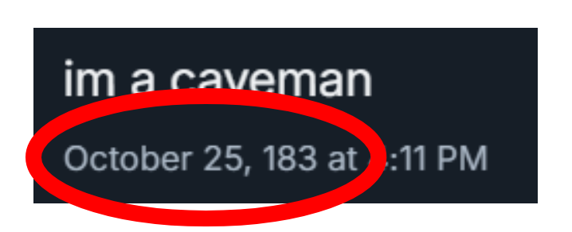
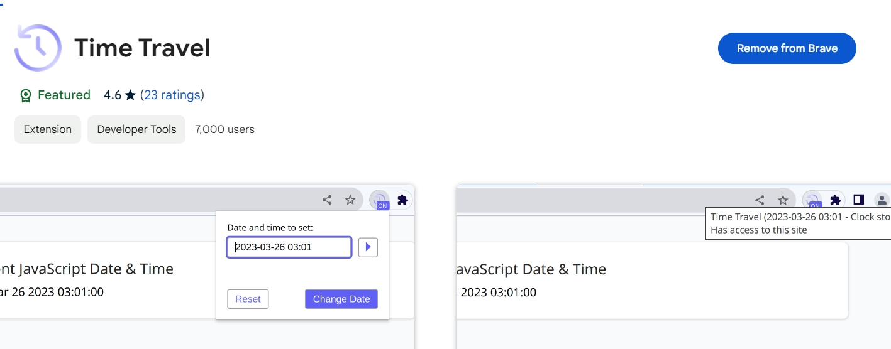
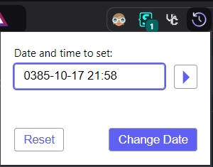

[actualunqiueyui.github.io]
How to change the date on your posts to whatever

So what you need to do is to download this extension (Click on it to redirect to the page)

After downloading, click on the icon and set your date to whatever

Click change date and refresh the page, make a post and you're done! Just don't forget to reset the date when finished.